The Lotas Tower
Read More
|
TowerLotus Tower (Sinhala: නෙළුම් කුළුණ; Tamil: தாமரைக் கோபுரம்), also referred to as Colombo Lotus Tower, is a 350 m (1,150 ft) tall tower, located in Colombo, Sri Lanka. It has been called a symbolic landmark of Sri Lanka. As of 2019, the tower is the tallest self-supported structure in South Asia; the second tallest structure in South Asia after the guy-wire-supported INS Kattabomman in India; the 11th tallest tower in Asia and the 19th tallest tower in the world. It was first proposed to be built in the suburb of Peliyagoda but later the Government of Sri Lanka decided to change the location. The lotus-shaped tower is used for communication, observation and other leisure facilities. Construction is estimated to have cost USD 113 million.
Design and functionThe design of this building is inspired by the Lotus flower. The lotus symbolizes purity within Sri Lankan culture and is also said to symbolize the country's flourishing development. The tower base is inspired by the lotus throne and will also be formed by two inverted trapezoidal. The tower's color is planned to alternate between pink and light yellow by smooth transition- an effect achieved by coating the glass.The tower is 350 m (1,150 ft) tall and covers 30,600 m2 (329,000 sq ft) of floor area. Lotus Tower's main revenue sources will be tourism and antenna leasing. It will function as a radio and television broadcasting antenna ISDB-T and proposed DVB-T2 support structure for 50 television services, 35 FM Radio Stations and 20 telecommunication service providers, and will house a variety of tourist attractions[citation needed]. The tower has four entrances, with two being used as VIP (distinguished guests and state leaders) entrances. A telecommunications museum and restaurant are located on the ground floor. The tower podium consists of 6 floors. The first floor of the podium will accommodate a museum and two exhibition halls. The second floor will be utilised for several conference halls with seating space in excess of 500 people. Restaurants, supermarkets, and food courts will be situated on the third floor. A 1000-seat auditorium will be located on the fourth floor, which will also be used as a ballroom. The fifth floor will include luxury hotel rooms, large ballrooms, and the seventh floor will host an observation gallery. The landscaping is planned in the form of a large water park.
ControversyDuring the opening ceremony which was held on 16 September 2019, President Maithripala Sirisena at a ceremonial speech mentioned and claimed an allegation on a scam regarding an advance of 2 billion rupees which was given to an approved company ALIT in 2012 by the then government, was later revealed in 2016 that such a company did not exist. However, this was later proven to be false as ALIT was in fact the acronym of the Chinese state-owned Aerospace Long-March International Trade Co. ALIT denied receiving the payment claiming that the entire amount was paid to the China National Electronics Import & Export Corporation (CEIEC) as had ALIT left the project. It also noted that the TRC paid $15.6 million (2 billion rupees) into CEIEC's account in Exim Bank in October 2012, the same amount which Sirisena claims to have been "misappropriated" by ALIT. |
|
||
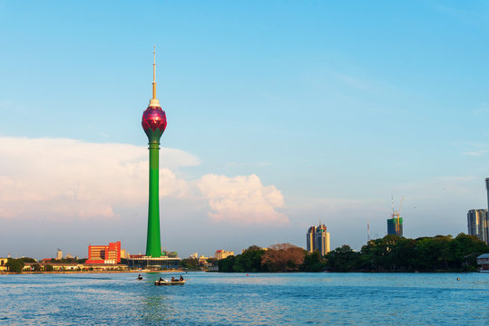
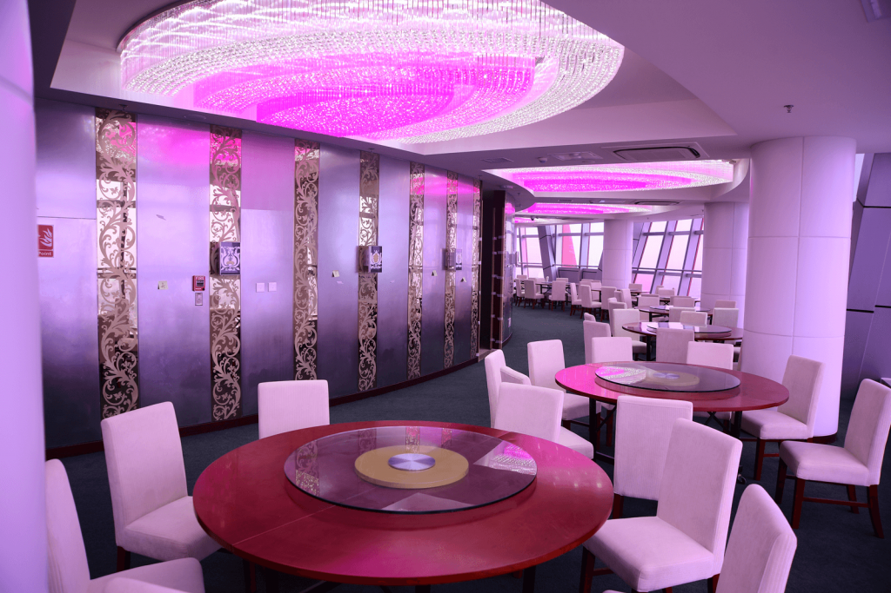
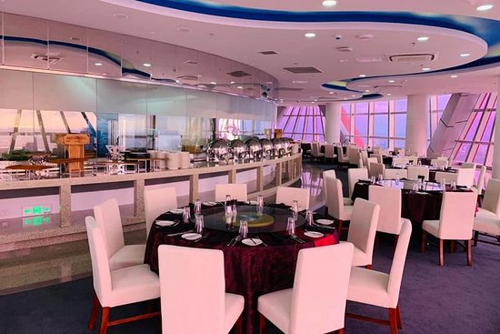
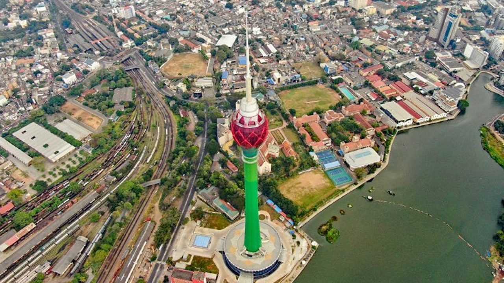
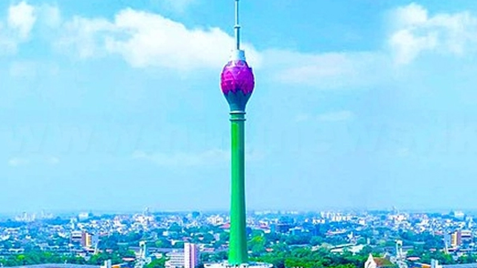
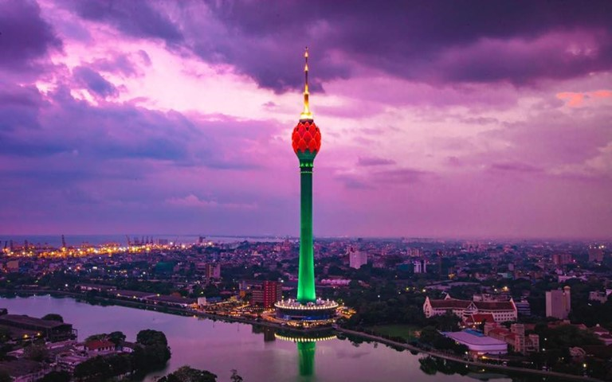
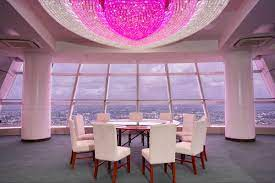
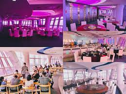
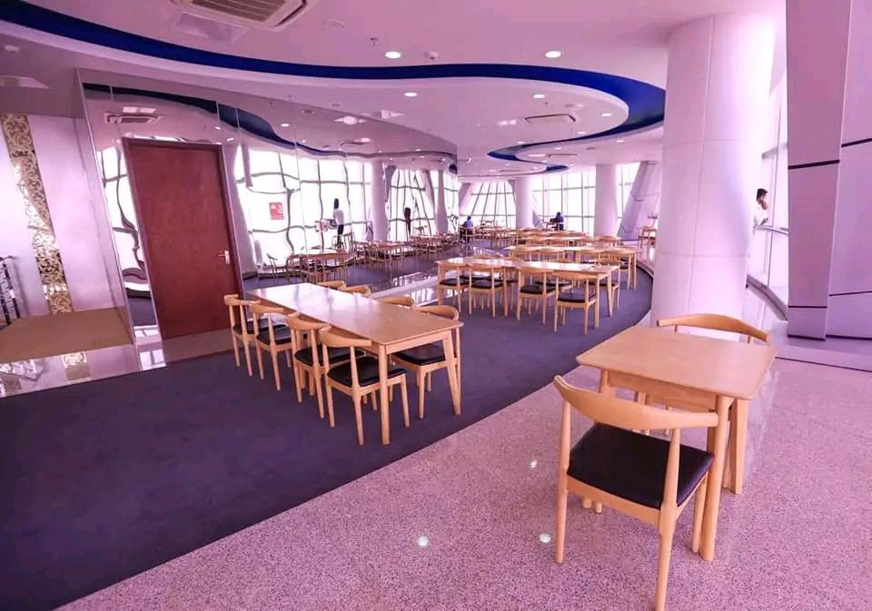
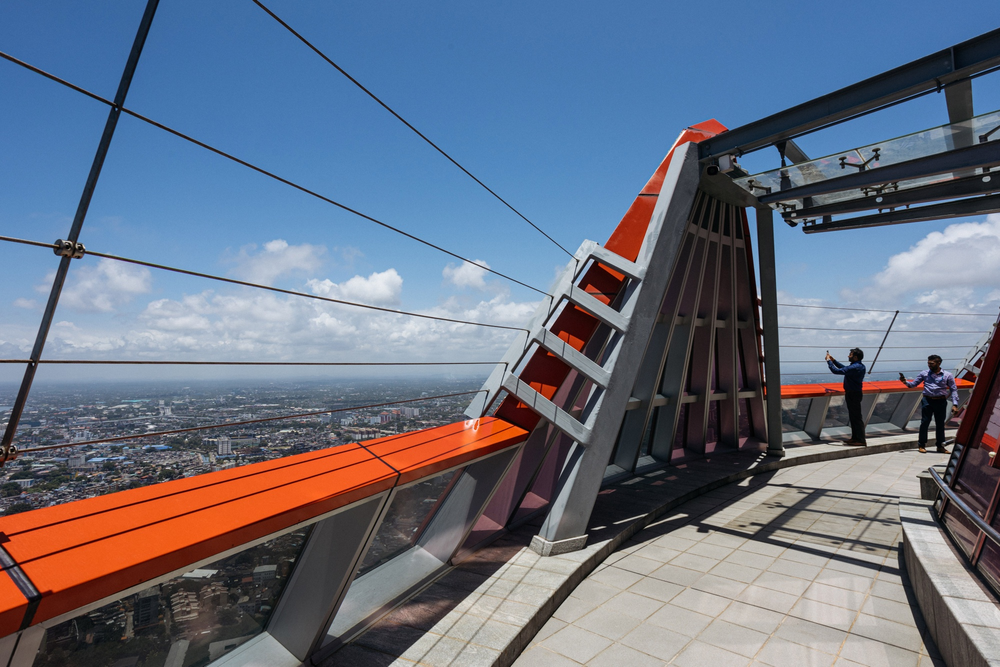
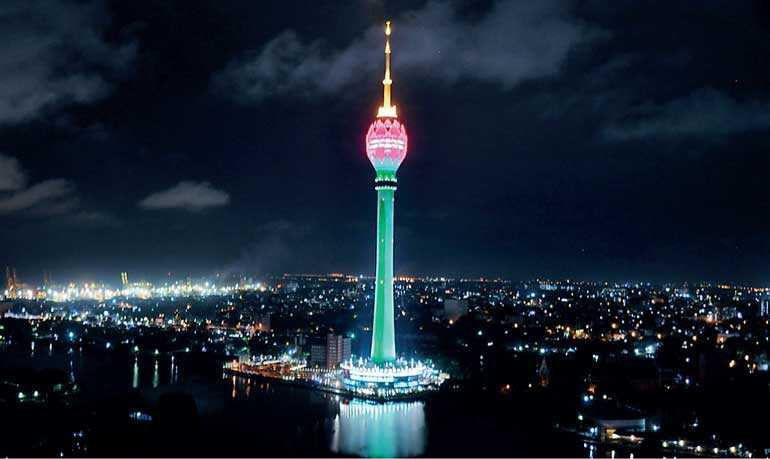
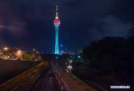
 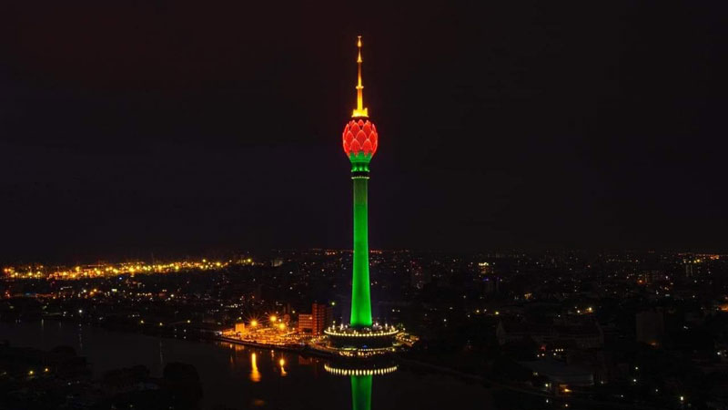
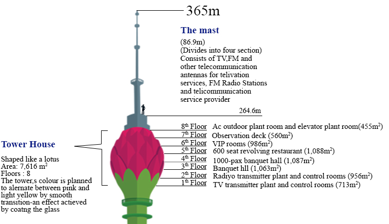
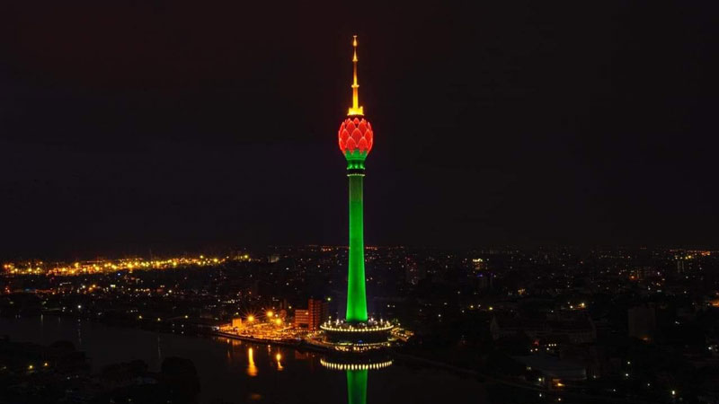
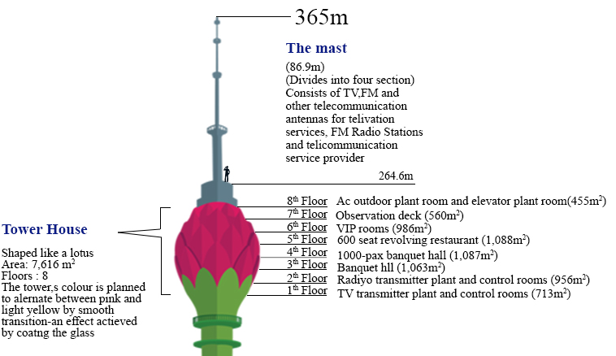

|
|||
|
|||